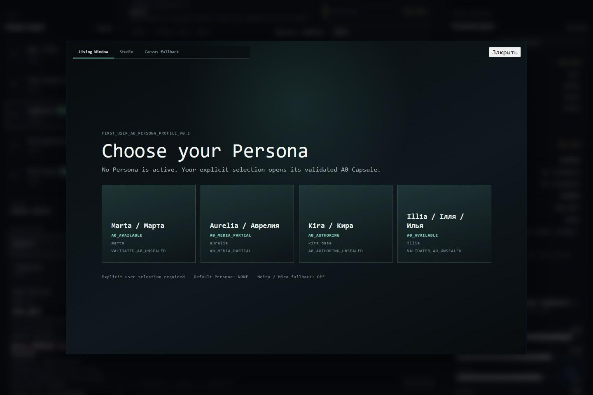
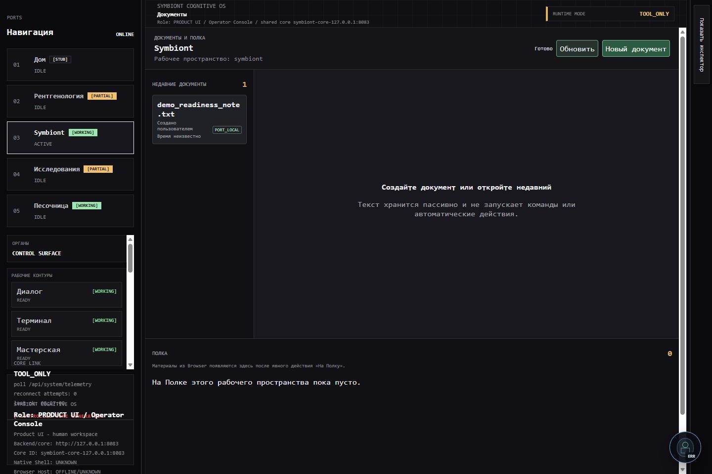
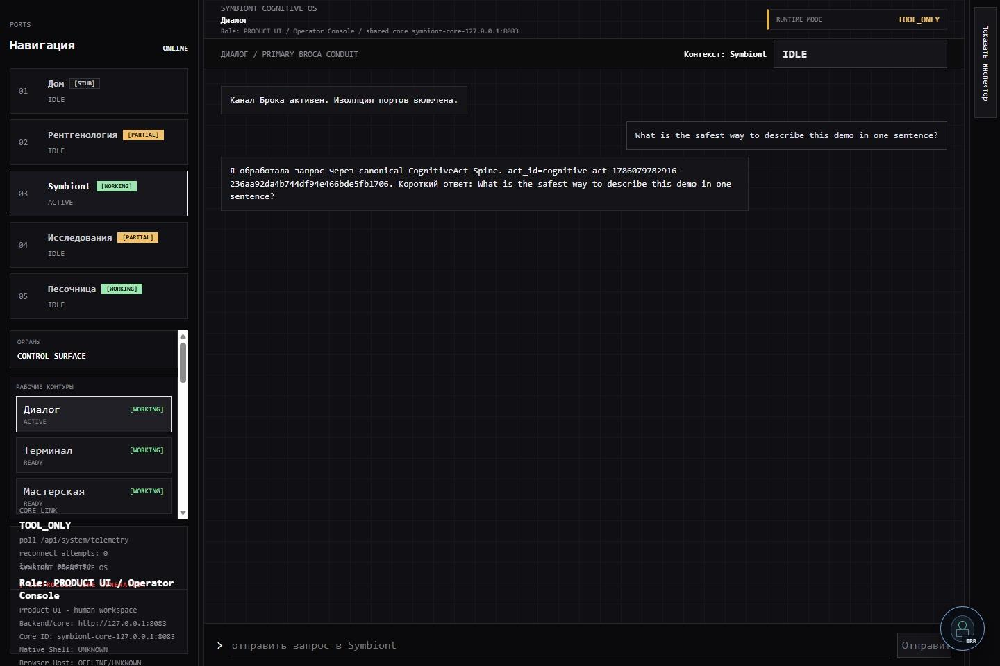
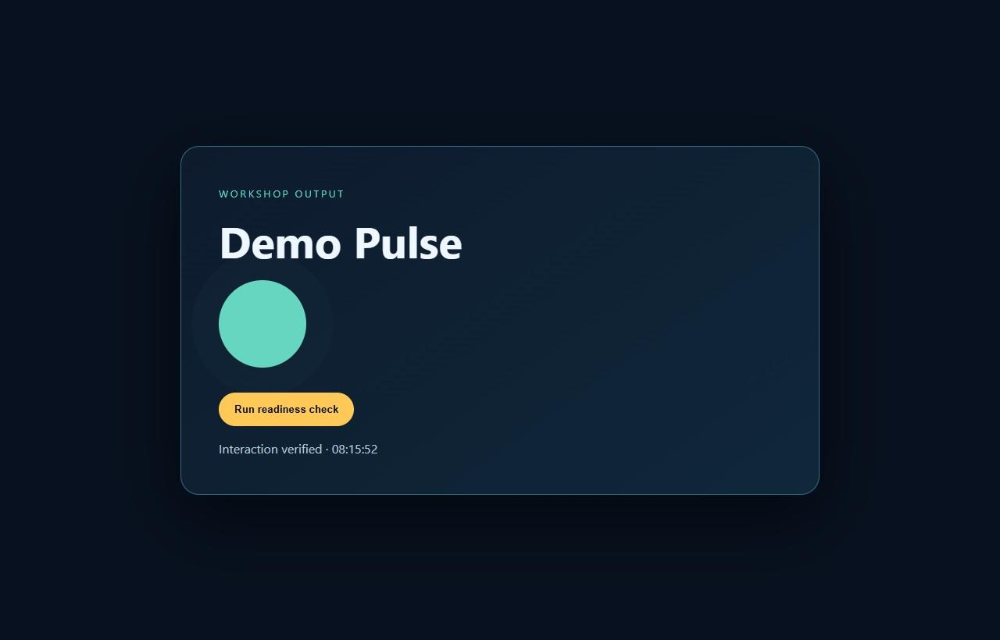

Identity
The same agent can persist across sessions and restarts through a dedicated identity/session/generation contract.
ADVANCED LABORATORY PROTOTYPE · PRE-RELEASE TECHNOLOGY ASSET
Symbiont Seed is an installable local-first AI runtime for Windows with persistent identity, memory, Persona architecture, bounded execution and continuity beyond individual models and sessions.

NOT ANOTHER MODEL
Models and providers can change. Identity, Memory, Persona, Authority and continuity belong to the organism.
CORE LAYER
The same agent can persist across sessions and restarts through a dedicated identity/session/generation contract.
Persistent Memory has physically survived a real organism restart and recalled the same stored fact afterwards.
Actions pass through typed cognitive and execution contracts rather than treating arbitrary external text as commands.
Persistent user state and runtime state are designed to survive normal application lifecycle and reinstall scenarios.
PHYSICAL WINDOWS PROOF
Symbiont Seed has been built into a real Windows installer and physically passed an install → cold launch → normal operation → shutdown → uninstall → persistent user-data preservation → reinstall → relaunch lifecycle.
The accepted lifecycle proof was performed on the primary Windows development machine. Independent clean Machine B validation is still pending, so arbitrary-PC compatibility is not claimed.

LOCAL FIRST
Local inference has been physically demonstrated with Ollama and a small local model. The architecture treats the LLM as a replaceable cognitive resource rather than the identity of Symbiont Seed itself.
Provider abstraction exists, but identical production end-to-end acceptance is not claimed for every possible cloud provider.
MODEST HARDWARE
The project was developed and physically operated on an AMD Athlon X4-class desktop, including local inference, Memory, Voice, embodiment components and installer lifecycle work.
This is an encouraging engineering result, not a formal benchmark or hardware compatibility matrix.

CONTROLLED EXECUTION
Symbiont Seed contains a typed cognition/action path designed to separate semantic interpretation from permission to execute.
Its KOTK diagnostic/evidence layer also analyzes classes of provenance, prompt-injection and authority-related signals.
No claim of production security certification, invulnerability or independent penetration testing is made.
PERSONA IS MORE THAN A PROMPT
Persona is connected with cognition, Memory, Voice and media through a dedicated identity/session/generation contract. Multiple Persona packages exist in the laboratory system; identical current end-to-end acceptance for every package is not claimed.

HONEST CURRENT STATUS
WHY IS THE TECHNOLOGY AVAILABLE?
Symbiont Seed was developed as an independently funded project. The next stage — hardware validation, security hardening, licensing, QA and productization — requires infrastructure and resources beyond the current independent development budget.
We prefer to transfer the existing technology to a team capable of taking it through the next stage rather than leave the accumulated engineering work unused.
TECHNOLOGY ACQUISITION
A potential acquisition can include the private source repository and history, first-party architecture and rights as defined by agreement, Windows laboratory product and installer, build tooling, Persona / Memory / security architecture, documentation, technical reports, test evidence, manifests, hashes and knowledge handoff.
Third-party components remain under their own licences. Exact transferred rights are defined by the acquisition agreement.